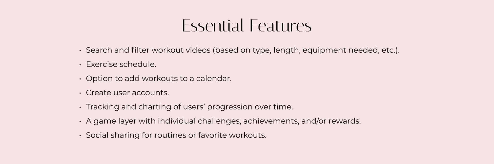
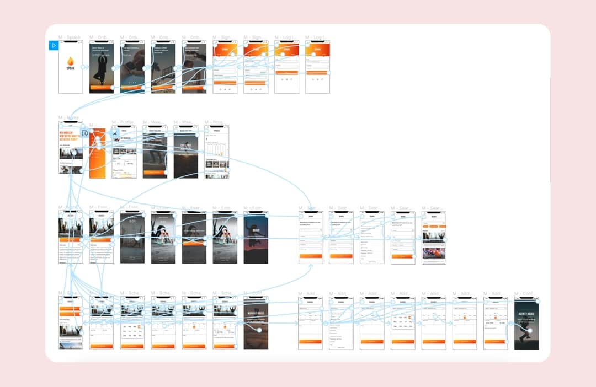
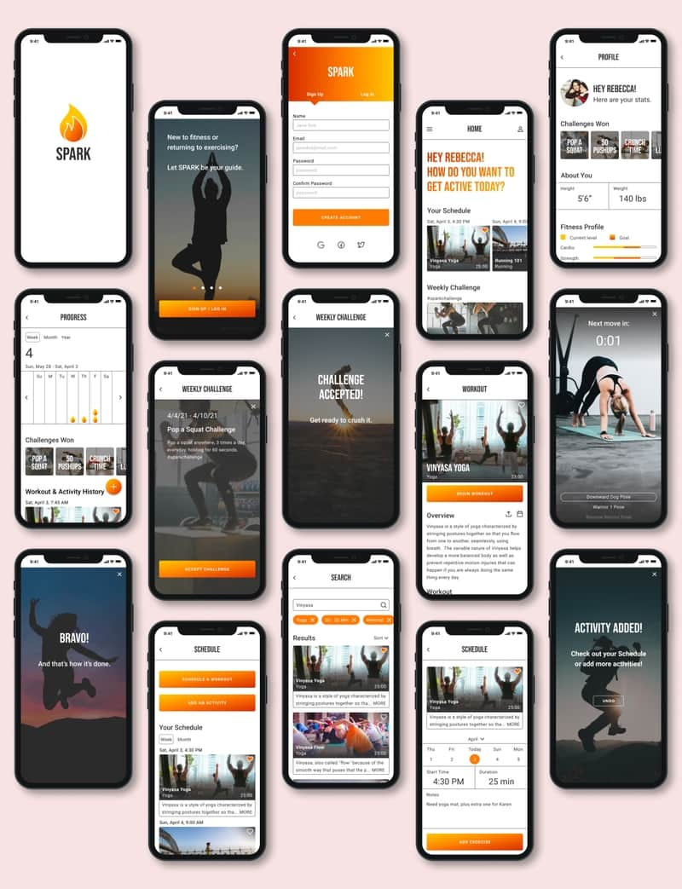

Project information
- Category: UI/UX Design
- Duration: 4 Months
- Tools: Figma,AdobeXD,Excel,OptimalSort,Paper and Pencil.
Overview
I created a responsive web exercise app. The apps goal is "to ignite a love for fitness" by helping users build a solid foundation through easy-to-follow workout videos and instructions.
Design Process
I started the inspiration phase of my process by conducting market research and competitor analysis to better understand who my competitors were and what they did well or poorly.

Problem Statement & solution
My findings revealed that despite there being so many dating apps, there wasnt an applicaation that met some of the needs that my application would. This meant that the potential for Tryste was huge. However, it was also a big risk (Why wasnt there an app with such features already?) I sought to overcome this risk by seizing the opportunity and creating an app users didnt know they needed.
My findings also helped me hsape my problem statement and possible solutions. my original problem statement has remained consistent throughout the apps development, through the solutions have changed slightly as ive progressed.

User Interviews
I conducted user interviews remotely to gain understaning of my users' needs, goals, and points of friction. I asked questions focused on users experiences with dating apps. I then analyzedmy usersanswers by sorting them into an affinity map to gain overraching insights.
The user research helped confirm or revise my possible solutions and user stories. From there, I decided to create the app with the following main functions:

Conceptualization
Used findings from inspiration phase to create three user personas to represent users with different backgrounds and needs.

User Journeys & Flows
In addition to the personas, I also created user journeys and user flows for the apps main functions. I wanted to understand how my users would complete a function and what they would need to accomplish it.
Site Map
I then created a site map to organize the structure of my app and have a visual represention of the screens and how they relate to each other. I used open card sort with 5 participants.

View full syle guide here:
Wireframes
I then started sketching low-fidelity wireframes with pen and paper. I moved on to adobe XD for mid and high-fidelity wireframes. throughout the different fidelity stages, continous iterations were made to improve the apps unctionality and UX.
Iteration
During the first phase of the iteraion phase, I used Figma to create a clickable prototype.

Usability Testing
I prepared for usability testing by creating a test plan and test script to ensure an easy and smooth testing experience for my participants. I conducted moderated remote usability tests and was able to gain alot of valuable insights.Using my findings from the tests i created an affinity map top analyze the results and a rainbow spreadsheet to map out and prioritize the errors that occured during testing.
Style Guide
I used real images and pops of color to engage users and get them excited about dating new people. I wanted the images to be aspirational, yet approachable, to show users possibilities that were attainable. The images also showcased people of variey of background and color to ensure that the app was appealing to different users' preference.
The app's main colors were Red and white. The red,pink hues evoked love and vibrancy. The whites and grey
Typography
For Typography, I used San serif to ensure legibility.
Icons
I used clean and simple icons, and for the most part i used universal icons. There were cases where the icons function, might not be obvious at first glance (e.g the premium and abiut us icons). However, with the added text, the user will learn what they mean.
Final reflections
Even through I was more drawn tocreating wireframes and prototpyes, Ifound that the most important part of the process was testing. Usability testing was crucuial infinding errors and seeing things from a diferent perspective . The biggest error occured was a lack of onbaording process which made it harder to complete tasks. In my next Iteration, i will add the onboarding to strike a balance between whay my participants want and what they need.
I also conducted a preference test to see which version of Logo and color they preferred. All of them preferred the alternate version. This was a great reminder to put my personal taste aside and keep my users front and center.
Constructive critisim was also an important part of the process. Asking my UX peers gave me ideas on ways to improve the app in future iterations.
I would also like to increase the accesibility of the app, especially outside of my region. Initially, my app was geared towards anyone within Kenyan and its borders. This means that the app may not be fully catered for use in oversee countries.